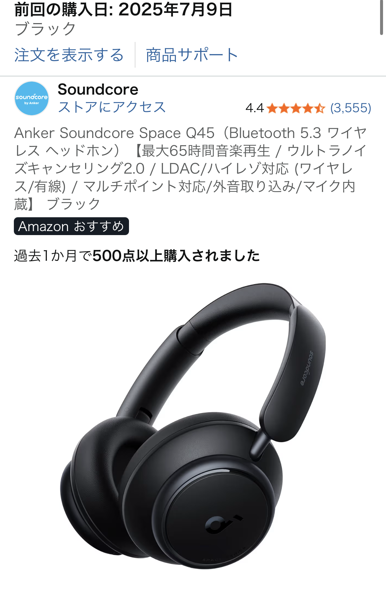

ブラックワイヤレスヘッドホンのシルエット問題を実際の口コミから検証【家用なら満足度高め】
※本記事は、2025年8月17日に投稿された日本の口コミ内容と一般的な使用感をもとに構成したレビューです。

「見た目がイマイチ」と言われたブラックヘッドホンのリアル
今回取り上げるのは、ブラックカラーのワイヤレスヘッドホンです。口コミでは、 「ヘッドホンとしての機能は全く問題ない」「ノイズキャンセル含む静音性は良い」と高く評価されている一方で、 パートナーからは「見た目が…イマイチ」と辛口コメントをもらったという声がありました。
特に指摘されていたのがシルエットです。本人としては気に入っていても、 横から見たときに頭が大きく見えたり、ヘッドバンドのラインが浮いて見えたりと、 ファッション目線で見ると「もう少しスマートに見せたい」と感じるポイントが出てきます。
ブラックヘッドホンが「おしゃれ」と「野暮ったい」の紙一重になる理由
ブラックのワイヤレスヘッドホンは、色だけ見れば非常に万能です。モノトーンコーデにも、カジュアルなパーカーにも合わせやすく、 首元にかけているときはアクセサリーのように見えることもあります。
しかし、実際に頭に装着したとき、ヘッドホンの厚み・カップの大きさ・ヘッドバンドのカーブによって印象が大きく変わります。 カップが大きめのモデルだと、横顔のシルエットが「丸く」見えやすく、特にブラックは輪郭をくっきり強調するため、 パートナーから「ちょっとゴツく見える」と言われてしまうことも。
つまり、同じブラックでも、「線が細いデザイン」か「ボリューム感のあるデザイン」かで、 おしゃれガジェットにも、少し野暮ったく見えるアイテムにもなり得る、というわけです。
家用としては「かなり優秀」な理由
一方で、口コミでは「家用として使う分には問題無し」とはっきり書かれていました。 これは非常に重要なポイントで、ファッション性よりも機能性を優先できるシーンでは満足度が高いということです。
ノイズキャンセルを含む静音性が良いと感じているということは、外部の生活音をしっかり抑えつつ、 音楽や動画に集中できるレベルの性能があるということ。テレワーク中の集中タイムや、 夜に家族を起こさず映画を楽しみたいときなど、家の中での「自分時間」を作るにはぴったりのガジェットです。
見た目に厳しいパートナーがいる場合でも、リビングではなく自室で使う・オンライン会議や作業中に限定するといった使い方なら、 シルエット問題はほとんど気にならず、むしろ「静かな環境を作ってくれる頼れる相棒」になってくれます。
ファッション目線で見る「失敗しないヘッドホン選び」のポイント
今回の口コミから見えてくるのは、「機能は満足、見た目だけ惜しい」というパターンを避けるために、 購入前にチェックしておきたいポイントがいくつかあるということです。
- 横からのシルエット：商品画像で横向きの写真があるか、装着イメージを必ず確認する
- カップの厚み：耳からどれくらい飛び出しているかで、頭の大きさの見え方が変わる
- ヘッドバンドの太さ：太すぎると「ヘルメット感」が出やすいので注意
- ブラックの質感：マットか、テカテカかで高級感が大きく変わる
特にブラックは「無難そうに見えて、実は一番ごまかしが効かない色」です。 だからこそ、シルエットと質感をしっかりチェックして選ぶことで、ファッションの一部としても成立するヘッドホンになります。
それでもブラックヘッドホンを選ぶ価値はあるか？
結論から言うと、家用メインなら十分に「買う価値あり」です。 ノイズキャンセルを含む静音性が良く、ヘッドホンとしての機能に不満がないのであれば、 見た目のマイナスを上回るだけの快適さと没入感を得られます。
また、ファッションとしても、シンプルな黒Tシャツやフーディーと合わせれば、 「音楽好きな人」の雰囲気を自然に演出できます。外出時にどうしてもシルエットが気になる場合は、 移動中だけイヤホンに切り替え、カフェや自宅で腰を落ち着けたタイミングでヘッドホンに付け替える、という使い分けも現実的です。
重要なのは、自分がどのシーンで一番長く使うのかをイメージして選ぶこと。 「家での作業時間が長い」「映画やアニメをじっくり楽しみたい」という方にとっては、 ブラックのワイヤレスヘッドホンは、生活の質を一段階引き上げてくれる投資になり得ます。
まとめ：シルエットにだけ注意すれば、家用ガジェットとしてはかなり優秀
今回の口コミから分かるのは、「見た目のシルエットは好みが分かれるが、機能面はかなり優秀」ということです。 ブラックのワイヤレスヘッドホンは、ノイズキャンセルと静音性のおかげで、家の中での集中時間をしっかり確保してくれます。
外でのファッション性を最優先するなら、よりスリムなモデルや別カラーを検討するのも一つの手ですが、 家用メインであれば、今回のようなモデルでも十分に満足度の高い選択肢になります。
「機能は妥協したくないけれど、見た目もできるだけスマートにしたい」という方は、 商品ページでシルエット写真をしっかり確認しつつ、自分のスタイルに合うかどうかをチェックしてみてください。
ブラックワイヤレスヘッドホンをチェックしてみる
実際の価格や最新の口コミ、装着イメージの写真は、Amazonの商品ページがもっとも分かりやすいです。 シルエットと機能のバランスが取れたヘッドホンを探している方は、以下のリンクから詳細を確認してみてください。